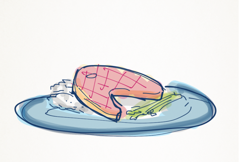

Salmon
Home
Cake
Salmon
Ice Cream
Salad
Miso Salmon Recipe
Courtesy of Foo Kitchens

Prep time: 15 min
Cooking time: 15 min
Serves 5
Ingredients:
- 2 Tablespoons Yellow miso paste
- 2 teaspoons Soy sauce
- 2 Tablespoons Lemon juice
- 1 Tablespoon Mirin
- 1 Salmon filet, skin removed
- 1/2 cup Green onion, chopped
Preparation:
- Create the glaze by whisking together the miso paste, brown sugar, soy sauce, lemon juice, and Mirin.
- Place the salmon filet on a roasting pan and coat the top with the glaze.
- Broil the filet for 10-15 minutes or until the filet is just cooked through. Do not overcook.
- Remove the filet from the broiler and top with the green onions.
- Serve with rice and stir-fried veggies.